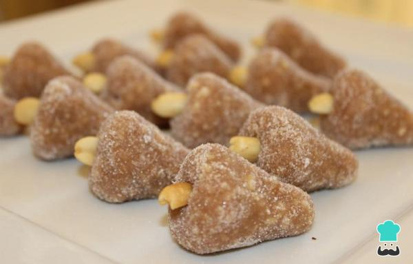

Cajuzinho

Description
Cajuzinho é um doce brasileiro feito de amendoim, comum em festas de aniversário. O docinho, depois de pronto, é normalmente moldado na forma de um caju, imitando a fruta com uma castanha no topo, o que justifica seu nome.
Ingredients
- 1 Leite MOÇA (lata ou caixinha)
- 1 colher (sopa) de manteiga
- 1 xícara (chá) de amendoim sem pele e sem sal, torrado e moído
- 1 colher (sopa) de Cacau em Pó
- 1 xícara (chá) de açúcar cristal
- amendoins inteiros para decorar
Steps
- Em uma panela, coloque o Leite MOÇA, a manteiga e o amendoim e o Chocolate em Pó.
- Leve ao fogo baixo, mexendo sempre, até desprender do fundo da panela (cerca de 8 minutos).
- Retire do fogo, passe para um prato untado com manteiga e deixe esfriar.
- Modele os cajuzinhos, passe pelo açúcar cristal e decore-os com um amendoim. Coloque em forminhas de papel.